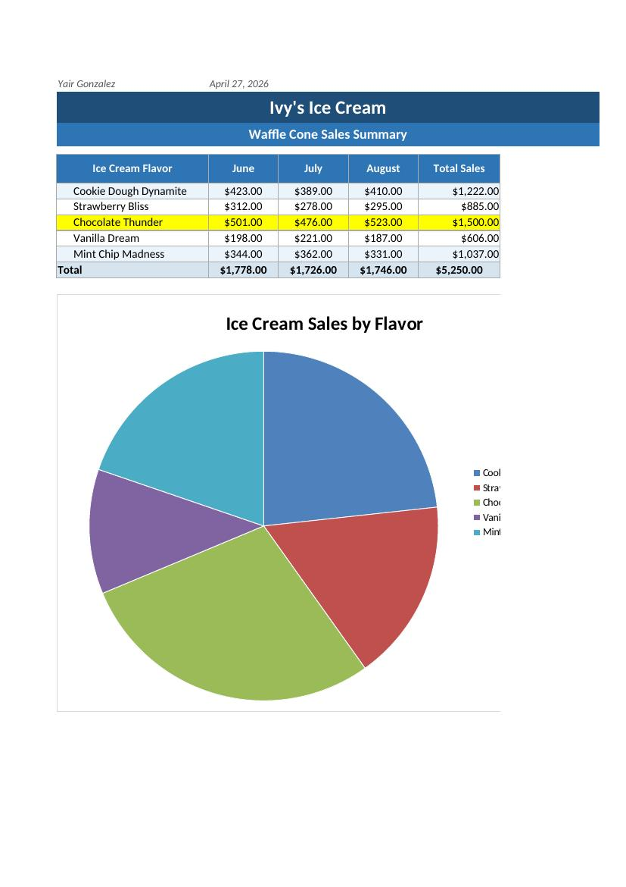

I have learned that the key thing from this module is that Excel will take an ordinary list of sales data and transform them into valuable business data. Using formulas, totals, percentages, and a pie chart, the spreadsheet allows one to quickly view which ice cream flavor is selling better than others. As a result, this will be applicable to the business world where many companies utilize spreadsheets to monitor sales data, compare products, and make better business decisions. For example, Ivy may notice that Chocolate Thunder was her highest selling product and therefore may want to order more of it.